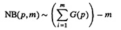
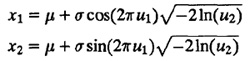

| Previous | Table of Contents | Next |
The distribution of number of trials up to and including the first success in a sequence of Bernoulli trials is called a geometric distribution. The key characteristics of the geometric distribution are summarized in Table 29.9.
TABLE 29.9 Geometric Distribution G(p)
The geometric distribution is a discrete equivalent of the exponential distribution. It is a memoryless distribution in the sense that remembering the results of past attempts does not help in predicting the future.
The geometric distribution is used to model the number of attempts between successive failures (or successes), for example,
Another common application of the geometric distribution is to model batch sizes with batches arriving in a Poisson stream. Under this condition, the arrivals remain memoryless and are easy to model.
Geometric variates can be easily generated using inverse transformation. Generate a U(0, 1) random number u and compute

Here, [·] denotes rounding up to the next larger integer.
TABLE 29.10 Lognormal Distribution LN(µμ,)
The log of a normal variate has a lognormal distribution. In regression modeling and analysis of experimental designs, often log transformation is used. In such cases, the response in the transformed model has a normal distribution while the original response has a lognormal distribution. The key characteristics of a lognormal distribution are summarized in Table 29.10.
It must be noticed that µ and σ are the mean and standard deviation of In(x) and should not be confused with those for the lognormal variate x.
The product of a large number of positive random variables tends to have an approximate lognormal distribution. It is therefore used to model errors that are a product of effects of a large number of factors.
Lognormal variates can be generated using a log of a normal variate. Generate x ~ N(0,1) and return eµ + α x.
In a sequence of Bernoulli trials, the number of failures x before the mth success has a negative binomial distribution. The key characteristics of a negative binomial distribution are summarized in Table 29.11.
The negative binomial distribution is used to model the number of failures before the mth success; for example:
TABLE 29.11 Negative Binomial Distribution NB(p,m)
The variance of NB(p,m) is greater than the mean for all values of p and m. Therefore, this distribution may be used in place of a Poisson distribution, which has a variance equal to the mean, or in place of a binomial distribution, which has a variance less than the mean.
Negative binomial variates can be generated as follows:

Also known as Gaussian distribution, the normal distribution was actually discovered by Abraham De Moivre in 1733. Gauss and Laplace rediscovered it in 1809 and 1812, respectively. The normal distribution N(0, 1) with µ = 0 and σ = 1 is called the unit normal distribution or standard normal distribution. The key characteristics of the normal distribution are summarized in Table 29.12.
TABLE 29.12 Normal Distribution N(µ, σ)
The normal distribution is used whenever the randomness is caused by several independent sources acting additively; for example:
Normal variates can be generated as follows:



TABLE 29.13 Pareto Distribution Pareto(a)
| Previous | Table of Contents | Next |